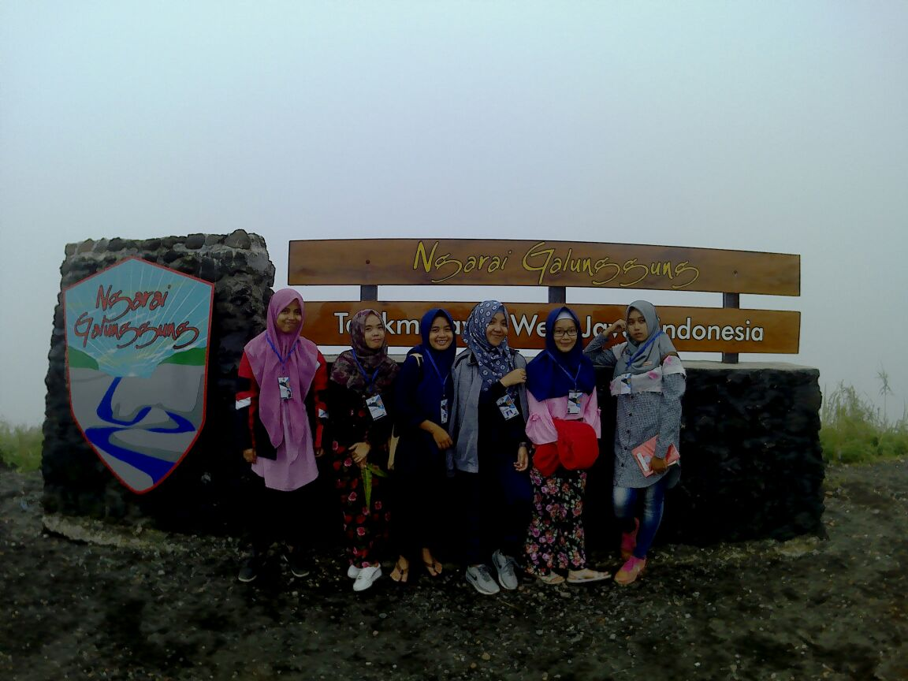
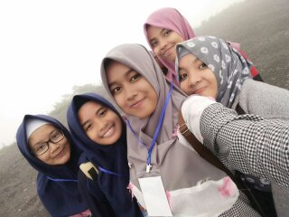

Tentang Saya
Beberapa dokumentasi ketika saya pergi dan teman saya ke Galunggung.
 Terimakasih sudah berkunjung di website saya. Mohon maaf apabila terdapat kesalahan dalam penulisan artikel, dan mohon maaf apabila websitenya masih jauh dari kata sempurna.
Sebelumnya